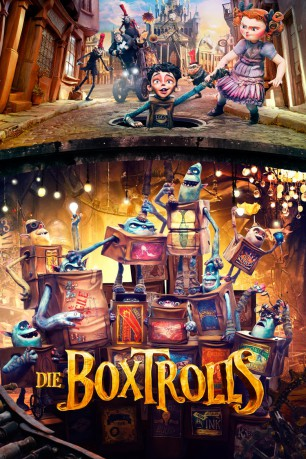

Alternativ: The Boxtrolls
Auszeichnungen: für 1 Oscars nominiert gesehen am 18.11.2015
gesehen am 18.11.2015
 
 IMDB-Wertung: 6.8 / 10
IMDB-Wertung: 6.8 / 10  Metascore:
Metascore: 
Die unter den Straßen der Stadt Cheesebridge hausenden Boxtrolls werden von den menschlichen Bewohnern der Oberfläche gefürchtet. Da die in Pappkartons lebenden Monster nur nachts ihre unterirdische Heimat verlassen, um in den Abfällen der Menschen nach allerlei Interessantem zu suchen, ranken sich viele Schauergeschichten um die Boxtrolls. In Wirklichkeit handelt es sich bei den Kreaturen um zwar nicht sehr reinliche, dafür aber umso liebenswürdigere, kleine und scheue Gesellen. Vor Jahren haben die Boxtrolls den Waisenjungen Eggs bei sich aufgenommen und ihn zu einem Bestandteil ihrer Gruppe gemacht. Als der verschlagene Archibald Snatcher die Boxtrolls endgültig vertreiben möchte, muss Eggs seine Familie verteidigen. Hilfe von den Menschen kann er nur in Form der quirligen Winnifred erwarten.
Jahr: 2014
Dauer: 96 Minuten
FSK: 6
Land: USA Studio: Focus FeaturesTonspuren: DTS - ,
Untertitel: Deutsch,
Auflösung: 1080p (1920x1080) Größe: 8304 MB
Genre: Animation/Trick, Abenteuer, Komödie, Familie, Fantasy
Regisseur: Graham Annable, Anthony Stacchi
Drehbuch: Irena Brignull, Adam Pava, Alan Snow, Anthony Stacchi, Phil Dale
Soundtrack: Dario Marianelli
Darsteller:
 Ben Kingsley als Archibald Snatcher
Ben Kingsley als Archibald Snatcher Jared Harris als Lord Portley-Rind
Jared Harris als Lord Portley-Rind Nick Frost als Mr. Trout
Nick Frost als Mr. Trout Dee Bradley Baker als Fish / Wheels / Bucket
Dee Bradley Baker als Fish / Wheels / Bucket Steve Blum als Shoe / Sparky
Steve Blum als Shoe / Sparky Nika Futterman als Oil Can / Knickers
Nika Futterman als Oil Can / Knickers Tracy Morgan als Mr. Gristle
Tracy Morgan als Mr. Gristle Pat Fraley als Fragile / Sweets
Pat Fraley als Fragile / Sweets Fred Tatasciore als Clocks / Specs
Fred Tatasciore als Clocks / Specs Elle Fanning als Winnie Portley-Rind
Elle Fanning als Winnie Portley-Rind Maurice LaMarche als Sir Langsdale
Maurice LaMarche als Sir Langsdale James Urbaniak als Sir Broderick / Male Workman 1 / Male Workman 2
James Urbaniak als Sir Broderick / Male Workman 1 / Male Workman 2 Brian George als Boulanger / Male Aristocrat
Brian George als Boulanger / Male Aristocrat Toni Collette als Lady Cynthia Portley-Rind
Toni Collette als Lady Cynthia Portley-Rind Simon Pegg als Herbert Trubshaw
Simon Pegg als Herbert Trubshaw Laraine Newman als Female Townsfolk 1 / Female Townsfolk 2
Laraine Newman als Female Townsfolk 1 / Female Townsfolk 2 Tom Kenny als Ed Vartis , uncredited
Tom Kenny als Ed Vartis , uncredited Julian Stone als Additional Voices , uncredited
Julian Stone als Additional Voices , uncreditedDatei: X:\Kinder Filme (A-F)\Boxtrolls, Die (2014, FSK6, 1920x1080) 3D.mkv seit 12.03.2015
Festplatte: Kinder-Filme+Trick
 Es gibt insgesamt 68 Filme in der Gruppe 'Kinder Filme (A-F)'
Es gibt insgesamt 68 Filme in der Gruppe 'Kinder Filme (A-F)'